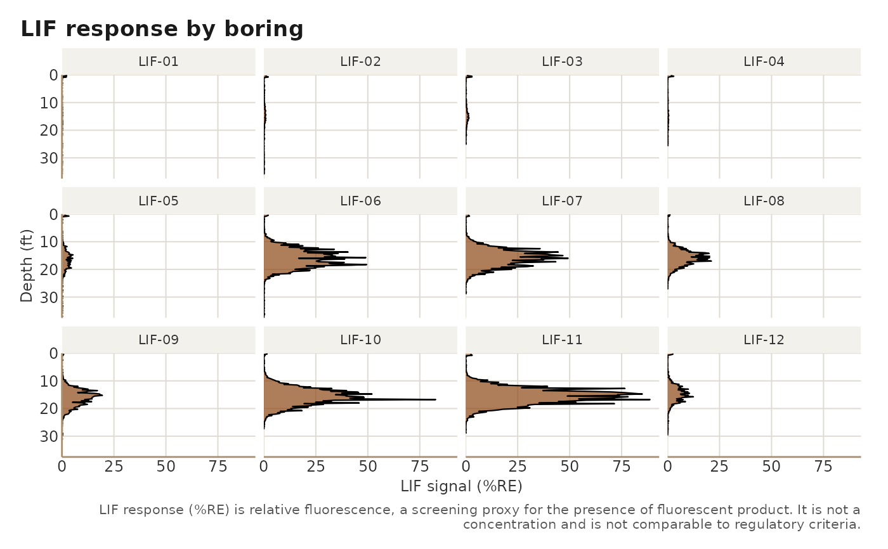

Plot LIF depth profiles for every boring
Usage
lif_plot_all(
data,
xmax = NULL,
ymax = NULL,
layout = c("facet", "list"),
ncol = NULL,
output_file = NULL,
width = 12,
height = 8,
dpi = 200
)Arguments
- data
A lif_data frame.
- xmax
Maximum depth shown (ft). Default: the deepest reading in
data, so every boring shares one depth axis.- ymax
Signal axis cap shared by all borings.
NULLuses 5% above the site maximum so panels are comparable.- layout
"facet"(default) returns one ggplot with a small multiple per boring;"list"returns a named list of single-boring plots fromlif_plot().- ncol
Facet columns for
layout = "facet";NULLlets ggplot2 choose.- output_file
Optional PNG path for the facet plot.
- width, height, dpi
Passed to
ggplot2::ggsave()when saving.
Examples
demo <- system.file("extdata", "demo", package = "lifr")
lif <- lif_import(demo, verbose = FALSE)
lif_plot_all(lif, ncol = 4)
